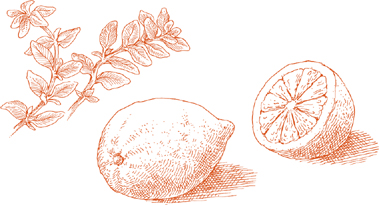
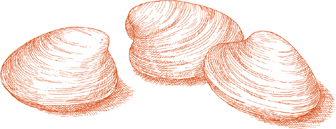
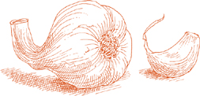
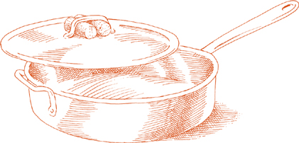
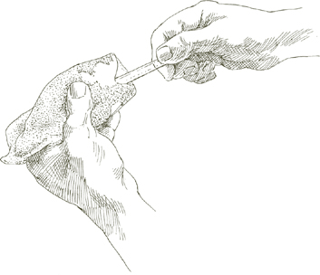
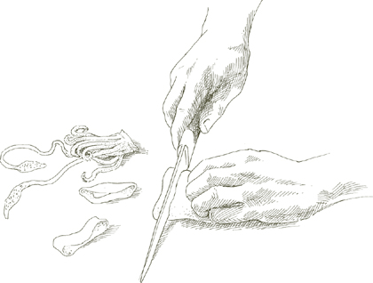

LONG BEFORE my native region of Romagna, on the northern Adriatic shore, became known for its string of beach towns and their all-night discos, it was famous for its fish. Romagna’s fishermen are unsurpassed in the art of grilling. Their secret, aside from the freshness of their catch, is to steep fish in a marinade of olive oil, lemon juice, salt, pepper, rosemary, and bread crumbs for an hour or more before broiling it. It’s a method that works well with all fish, sweetening its natural sea flavor and keeping the flesh from drying out over the fire.
For 4 or more servings
2½ to 3 pounds whole fish, gutted and scaled, OR fish steaks
Salt
Black pepper, ground fresh from the mill
¼ cup extra virgin olive oil
2 tablespoons freshly squeezed lemon juice
A small sprig of fresh rosemary OR ½ teaspoon dried leaves chopped very fine
⅓ cup fine, dry, unflavored bread crumbs
OPTIONAL: a charcoal or wood-burning grill
OPTIONAL: a small branch of fresh bay leaves or several dried leaves
1. Wash the fish or the fish steaks in cold water, then pat thoroughly dry with paper towels.
2. Sprinkle the fish liberally with salt and pepper on both sides, put it on a large platter, and add the olive oil, lemon juice, and rosemary. Turn the fish two or three times to coat it well. Add the bread crumbs, turning the fish once or twice again until it has an even coating of oil-soaked bread crumbs. Marinate for 1 or 2 hours at room temperature, turning and basting the fish from time to time.
3. If using charcoal or wood, light the charcoal in time for it to form white ash before cooking, or the wood long enough in advance to reduce it to hot embers. If using an indoor gas or electric grill, preheat it at least 15 minutes before you are ready to cook.
4. Place the fish 4 to 5 inches from the source of heat. Do not discard its marinade. If cooking on charcoal or with wood, throw the bay leaves into the fire, otherwise omit. Grill on both sides until done, turning the fish once. Depending on the thickness of the fish steaks or the size of the whole fish, it may take between 5 and 15 minutes. While cooking, baste the top with the marinade. Serve piping hot from the grill.
WHEREVER IN THE WORLD you may be when having fish prepared in the salmoriglio style, you might think you are breathing the pungent summer air of the Mediterranean. Olive oil, lemon juice, and oregano make a beguilingly fragrant amalgam that is brushed on smoking hot fish the moment it’s lifted from the grill. The fish of choice is swordfish, as it would be on Sicily’s eastern shore, but other steak fish such as tuna, halibut, mako shark, or tilefish are acceptable alternatives. The Sicilian practice of using rather thin slices is ideal because it makes it possible to keep the fish on the grill such a brief time that it doesn’t have a chance to dry out.
For 4 to 6 servings
OPTIONAL: a charcoal grill
Salt
2 tablespoons freshly squeezed lemon juice
2 teaspoons chopped fresh oregano OR 1 teaspoon dried
¼ cup extra virgin olive oil
Black pepper, ground fresh from the mill
2 pounds fresh swordfish OR other fish steaks, sliced no more than ½ inch thick
1. If using charcoal, light it in time for it to form white ash before cooking. If using an indoor gas or electric grill, preheat it at least 15 minutes before you are ready to cook.
2. Put a liberal amount of salt, about 1 tablespoon, into a small bowl, add the lemon juice, and beat with a fork until the salt has dissolved. Add the oregano, mixing it in with the fork. Trickle in the olive oil, drop by drop, beating it in with the fork to blend it with the lemon juice. Add several grindings of pepper, stirring to distribute it evenly.
3. When the broiler or charcoal is ready, place the fish close to the source of heat so that it cooks quickly at high heat. Grill it for about 2 minutes on one side, then turn it and grill the other side for 1½ to 2 minutes. It doesn’t need to become brown on the surface.
4. Transfer the fish to a large, warm serving platter. Prick each steak with a fork in several places to let the sauce penetrate deeper. Use a spoon to beat and, at the same time, to pour the salmoriglio mixture of oil and lemon juice over the fish, spreading it evenly all over. Serve at once, spooning some sauce from the platter over each individual portion.
Note  Freshness is essential to the fragrance of salmoriglio sauce. Do not prepare it long in advance. It is so simple and quick to do that you can make it while the grill is warming up.
Freshness is essential to the fragrance of salmoriglio sauce. Do not prepare it long in advance. It is so simple and quick to do that you can make it while the grill is warming up.
THERE IS no other way I have ever come across that produces grilled shrimp as juicy as these. The coating of olive oil-soaked bread crumbs is what does it. When preparing it, bear in mind that there should be enough oil to film the shrimp, but not so much to drench them, enough bread crumbs to absorb oil and keep it from running, but not so much to bread them and form a thick crust.
For 4 to 6 servings
2 pounds medium shrimp, unshelled weight
3½ tablespoons extra virgin olive oil
3½ tablespoons vegetable oil
⅔ cup fine, dry, unflavored bread crumbs
½ teaspoon garlic chopped very fine
2 teaspoons parsley chopped very fine
Salt
Black pepper, ground fresh from the mill
Skewers
OPTIONAL: a charcoal grill
1. Shell the shrimp and remove their dark vein. Wash in cold water and pat thoroughly dry with cloth kitchen towels.
2. Put the shrimp in a roomy bowl. Add as much of the olive and vegetable oil, in equal parts, and of the bread crumbs as you need to coat the shrimp evenly, but lightly all over. You may not require all the oil indicated in the ingredients list, but if you have a large number of very small shrimp you may need even more. When you increase the quantity, use olive and vegetable oil in equal parts.
3. Add the chopped garlic, parsley, salt, and pepper, and toss thoroughly to coat the shrimp well. Allow them to steep in their coating a minimum of 20 to 30 minutes, or up to 2 hours, at room temperature.
4. Preheat the broiler at least 15 minutes before you are ready to cook, or light the charcoal in time for it to form white ash before cooking.
5. Skewer the shrimp tightly, curling one end of each shrimp inward so that the skewer goes through at three points, preventing the shrimp from slipping as you turn the skewer on the grill.
6. Cook the shrimp briefly, close to the source of heat. Depending on their size and the intensity of the fire, about 2 minutes on one side and 1½ on the other, just until they form a thin, golden crust. Serve piping hot.

THE PRAWN-LIKE crustaceans with a broad, flat body and mantis-like front claws that Italians call cannocchie, are found in the Adriatic, and nowhere else in the Western Hemisphere to my knowledge. (A closely related variety is caught off the coast of Japan, where it is known as shako.) The exceptionally tender, sweet, and salty flesh resembles that of no other shellfish. Restaurants in Venice serve cannocchie steamed, shelled, and dressed with olive oil and lemon juice. The name of the dish, cannocchie con olio e limone, is one every visitor to Venice who cares about eating well should memorize before arrival.
The way the fishermen of my town prepare cannocchie is rarely if ever found on a restaurant menu. They split the back of the shell along its whole length, marinate the shrimp in olive oil, bread crumbs, salt, and a prodigal quantity of black pepper, and grill them over very hot charcoal or wood embers. But how they are cooked is only half the story, it’s how you eat them. You pick one up with your fingers, spread the shell open with your lips, and suck in the meat. In Romagna we call it eating col bacio, with a kiss. And a most savory kiss it is, as you lick from the shell its peppery coating of oil-soaked crumbs enriched by the charred flavor of the shell itself.
The shrimp in this recipe is prepared in the manner of cannocchie, and should be eaten in the same lip-smacking style. It’s advisable to serve it with a plentiful supply of paper napkins.
For 4 to 6 servings
2 pounds medium to large unshelled shrimp
Round wooden toothpicks
1 cup unflavored bread crumbs
Salt
⅓ cup extra virgin olive oil
Black pepper, ground fresh from the mill
OPTIONAL: a charcoal or wood-burning grill
1. Wash the unshelled shrimp in cold water, then pat thoroughly dry with cloth kitchen towels.
2. Using scissors, cut the shell of each shrimp along the back and for its entire length down to the tail. Run a single toothpick into each shrimp, inserting it between the flesh of the belly and the shell. This is to straighten the shrimp and to keep it from curling while it cooks so that when done it resembles cannocchie.

3. When all the shrimp is prepared, put it in a bowl and add all the other ingredients. Be liberal with both salt and pepper. Turn the shrimp to coat it thoroughly, forcing a little of the marinade under the shell where it is cut. Let steep at room temperature for at least ½ hour, or as long as 2 hours, turning it from time to time.
4. If using charcoal or wood, light the charcoal in time for it to form white ash before cooking, or the wood long enough in advance to reduce it to hot embers. If using an indoor gas or electric grill, preheat it at least 15 minutes before you are ready to cook.
5. If using charcoal or wood, put the shrimp in a hinged, double grill and close the grill tightly. If using an indoor broiler, place it on the broiler’s grilling pan. Cook very close to the source of heat, about 2 minutes on one side and 1½ minutes on the other, or slightly more if the shrimp is very thick. When done, serve at once, with plenty of paper napkins available.
THERE ARE MANY frying batters, each suited to a different objective. For a thin eggshell-like crust of matchless crispness, try the flour-and-water batter. For a crisp coating that is also light and fluffy, try the yeast batter given below. It is a favorite of cooks from Rome down to Palermo who use it for frying small shellfish and vegetables.
Skewering each shrimp, or 2 at a time if very small, with a toothpick as described in the recipe is not absolutely necessary, but it has its advantages. If you are using tiny shrimp, which would be the most desirable ones for this dish, it keeps them from forming lumps of two or three as they fry and permits them to maintain a clearly defined and attractive shape. And it is very helpful to have one end of the toothpick to hold on to when dipping the shrimp in the batter.
For 4 servings
1 pound unshelled shrimp, as small as possible
OPTIONAL: round wooden toothpicks
2 eggs
Salt
½ package active dry yeast (about 1¼ teaspoons), dissolved in 1 cup lukewarm water
1 cup flour
Vegetable oil for frying
1. Shell the shrimp and remove their dark vein. Wash in several changes of cold water and pat thoroughly dry with cloth kitchen towels.
2. OPTIONAL: Bend each shrimp following its natural curve, causing the head and tail to meet and slightly overlap. Skewer it with a toothpick holding tail and head in place.
3. Break both eggs into a bowl, add a large pinch of salt, and beat them well with a fork. Add the dissolved yeast, then add the flour, shaking it through a strainer, while beating the mixture steadily with a fork.
4. Put enough oil in a frying pan to come ¼ inch up its sides and turn on the heat to high. To determine when the oil is hot enough for frying, plop a drop of batter into it: If it stiffens and instantly comes to the surface, the oil is ready.
5. Dip the shrimp into the batter, letting the excess flow back into the bowl, and slip it into the pan. Do not put in any more shrimp at one time than will fit loosely without crowding the pan. As soon as the shrimp has formed a rich, golden crust on one side, turn it and do the other side. Using a slotted spoon or spatula, transfer the fried shrimp to a cooling rack to drain, or place it on a platter lined with paper towels.
6. Stir the batter with the fork, dip more shrimp, and repeat the procedure described above, until all the shrimp are done. Sprinkle with salt and serve promptly.
HERE WE HAVE an excellent Sicilian method to use when working with fish that tends to become dry. The fish is soaked for about 1 hour in an olive oil and lemon juice marinade, then it is fried. The cooking goes very fast because the fish is sliced thin and cut into bite-size morsels. When it comes out of the pan it is nearly as moist and tender as when it came out of the sea.
For 4 servings
2 pounds fresh swordfish OR other fish steaks, sliced ½ inch thick
Salt
Black pepper, ground fresh from the mill
⅓ cup extra virgin olive oil
3 tablespoons parsley chopped very, very fine
¼ cup freshly squeezed lemon juice
2 eggs
Vegetable oil for frying
1 cup flour, spread on a plate
1. Cut the fish steaks into pieces that are more or less 2 by 3 inches.
2. Put a liberal quantity of salt and pepper into a broad bowl or deep platter, add the olive oil, parsley, and lemon juice, and beat with a fork until the ingredients are evenly blended. Put in the fish, turning the pieces over several times in the oil and lemon juice mixture to coat them well. Let the fish marinate at least 1 hour, but no more than 2, at room temperature, turning it from time to time.
3. Retrieve the fish from its marinade, and pat the pieces thoroughly dry with paper towels.
4. Break the eggs into a deep dish, beating them with a fork until the yolks and whites combine.
5. Pour enough vegetable oil into a frying pan to come between ¼ and ½ inch up its sides and turn on the heat to high.
6. While the oil heats up, dip a few pieces of fish into the beaten eggs. Pick up one of the pieces, let the excess egg flow back into the dish, and dredge the piece on both sides in the flour. Holding the piece by one end with your fingertips, dip a corner of it into the pan. If the oil around it bubbles instantly, it is hot enough and you can slip in the whole piece. Dredge more egg-coated fish in the flour and add it to the pan, but do not crowd the pan.
7. When the fish has formed a light golden crust on one side, turn it. When crust forms on the other side, transfer the fish, using a slotted spoon or spatula, to a cooling rack to drain, or place on a large plate lined with paper towels. When there is room in the pan, add more fish. When it is all done, sprinkle with salt and serve at once.
HERE FISH is cooked by the same method one uses for making a roast of veal in Italy, and for the same reasons. The slow cooking in a covered pan keeps the flesh tender and juicy, its flavor uplifted by the fragrance of rosemary and garlic.
For 4 servings
4 small mackerel, about ¾ pound each, gutted and scaled, but with heads and tails on
⅓ cup extra virgin olive oil
4 garlic cloves, peeled
A small sprig of rosemary OR 1 teaspoon dried leaves, crumbled
Salt
Black pepper, ground fresh from the mill
Freshly squeezed juice of ½ lemon
1. Wash the fish under cold running water, then pat thoroughly dry with paper towels. Make 3 parallel, diagonal cuts on both sides of each fish, cutting no deeper than the skin.
2. Put the olive oil and garlic in an oval roasting pan, if you have one, or a saute pan or other pot where the fish can subsequently fit side by side. Turn on the heat to medium, and cook the garlic until it becomes colored a pale gold. Put in the fish and the rosemary. Brown the fish well on both sides. Keep loosening it from the bottom with a metal spatula to keep it from sticking, and turn it over carefully to make sure it doesn’t break up. Put salt and pepper on both its sides.
3. Add the lemon juice, cover with a tight-fitting lid, turn the heat down to low, and cook for about 10 to 12 minutes, until the flesh feels tender when prodded with a fork. Serve promptly when done.
FISH AND MUSHROOMS in Italy have a strong common bond, the garlic and olive oil with which they are customarily cooked. Both fish and mushrooms come together quite naturally in this recipe, but they are fully cooked independently and if you want to omit the mushrooms, the fish stands well on its own.
For 4 servings
FOR THE MUSHROOMS
½ pound fresh, firm white button mushrooms, cooked as described, with 2 tablespoons extra virgin olive oil, 1 teaspoon chopped garlic, 2 teaspoons chopped parsley, and salt
FOR THE FISH
A 2- to 2½-pound whole fish, such as red snapper or sea bass, gutted and scaled, but with head and tail on
1 large or 2 small garlic cloves
2 tablespoons extra virgin olive oil
2 tablespoons onion chopped fine
2 tablespoons chopped carrot
2 teaspoons chopped parsley
1 whole fresh bay leaf OR
½ dried, crumbled fine
⅓ cup dry white wine
1 flat anchovy fillet, chopped fine, to a pulp
Salt
Black pepper, ground fresh from the mill
1. Wash the scaled and gutted fish under cold running water, then pat it thoroughly dry with paper towels.
2. Lightly mash the garlic with a heavy knife handle, just enough to split its skin and peel it.
3. Choose a saute pan just large enough to accommodate the fish later, put in the olive oil and onion, and turn on the heat to medium-low. Cook the onion, stirring, until it becomes translucent, add the chopped carrot, and cook for about 2 minutes, stirring thoroughly to coat it well. Add the garlic and cook it, stirring, until it becomes lightly colored. Add the parsley, stir thoroughly once or twice, then put in the bay leaf, the wine, and the anchovy. Cook, stirring frequently, mashing the anchovy against the sides of the pan with the back of a wooden spoon until the wine has evaporated by half.
4. Put in the fish, season both fish and vegetables with salt and pepper, and cover the pan, setting the lid slightly ajar. Cook for about 8 minutes, depending on the thickness of the fish, turn it over carefully, using two spatulas or a large fork and spoon to keep it from breaking apart, sprinkling salt and pepper on the side you have just turned over. Cook for 5 minutes more, always with a cover on ajar, then add the optional mushrooms. Cover the pan, and let the fish and mushrooms cook together for no more than a minute. Serve promptly.

For 4 servings
1. Wash the fish in cold water, inside and out. If using a fish fillet, separate it into two halves, remove the bones, but leave the skin on.
2. Cut off the finocchio tops down to the bulbs, and discard them. Trim away any bruised, discolored portion of the bulbs. Cut the bulbs lengthwise into thin slices less than ½ inch thick. Soak them in cold water for a few minutes and rinse.
3. Choose a saute pan that can subsequently accommodate all the fish. Put in the olive oil, the sliced finocchio, salt, about ½ cup water, and turn on the heat to medium. Cover the pan and cook for 30 minutes or more, depending on the freshness of the finocchio, until it is completely wilted and very tender. If after 20 minutes, the finocchio appears still to be hard when prodded with a fork, add ¼ cup water.
4. When the finocchio is tender, uncover the pan, and turn up the heat to boil away completely any liquid left in the pan. Turn the finocchio slices frequently until they become colored a deep gold on both sides. Add a few grindings of pepper, turn the heat down to medium, and push the finocchio to one side to make room for the fish in the pan.
5. Put in the fish, skin side down if you are using fish fillet, sprinkle with liberal pinches of salt and grindings of pepper, and spoon some of the oil in the pan over it. Cover and cook for 6 to 7 minutes. Then gently turn the fish over, baste again with olive oil, cover, and cook another 5 minutes or so, depending on the thickness of the fish.
6. Transfer the fish to a platter and pour the entire contents of the pan over it. If using whole fish, you might prefer to fillet it before placing it in the serving platter. It’s not difficult to do: Separate the fish into two lengthwise halves, pick out the bones, use a spoon to detach the head and tail, and it’s done. Remember to cover with all the finocchio slices and juices from the pan.
PAN-ROASTING—the method that is neither sautéing nor braising, but something in between—is one of the basic techniques of the Italian kitchen for cooking fish as well as meat, chicken, and smaller birds. It is more controlled cooking than oven-roasting, combining the slow concentration of flavor that takes place in the dry air of the oven with the juiciness and superior texture one can achieve on top of the stove.
The recipe below is most successful with small, whole fish, but firm-fleshed, thick fillets with the skin on can also be used.
For 4 to 6 servings
4 small or 3 medium whole fish, such as porgies, bass, pompano, about ¾ to 1 pound each, scaled and gutted, but with head and tail on
3 garlic cloves
3 tablespoons butter
2 tablespoons vegetable oil
1 cup flour, spread on a plate
1 teaspoon fresh marjoram leaves OR ½ teaspoon dried
Salt
Black pepper, ground fresh from the mill
1 tablespoon freshly squeezed lemon juice
1. Wash the fish inside and out in cold water, then pat thoroughly dry with paper towels.
2. Lightly mash the garlic with a heavy knife handle, just hard enough to split the skin, and peel it.
3. Choose a lidded saute pan or deep skillet that will subsequently be able to accommodate all the fish without overlapping. Put in the butter and oil and turn on the heat to medium high.
4. When the butter and oil are quite hot, dredge the fish in flour on both sides, and put it in the pan together with the garlic and marjoram. If using thick fillets, put them in skin side down first.
5. Brown the fish for about 1½ minutes on each side. Add liberal pinches of salt, black pepper, and the lemon juice, cover the pan, and turn the heat down to medium. Cook for about 10 minutes, depending on the thickness of the fish, turning the fish over after 6 minutes or so.
6. Transfer to a warm serving platter, lifting the fish gently with two metal spatulas to keep it from breaking up, pour all the juices in the pan over it, and serve at once.

For 4 servings
2 pounds halibut OR other fish steaks in slices 1 inch thick
½ cup extra virgin olive oil
⅔ cup flour, spread on a plate
1½ cups onion chopped fine
3 tablespoons chopped parsley
Salt
⅔ cup dry white wine
1 or 2 flat anchovy fillets (preferably the ones prepared at home as described), chopped to a pulp
Black pepper, ground fresh from the mill
1. Wash the fish steaks in cold water, then pat them thoroughly dry with paper towels. Do not tear or remove the skin that encircles them.
2. Choose a saute pan that can subsequently accommodate all the fish without overlapping. Put in half the olive oil and turn on the heat to medium.
3. Dredge the fish in the flour on both sides. When the oil is hot, slip the steaks into the pan, and cook them about 5 minutes on one side and 4 minutes or less on the other. Take off heat, and draw off and discard most of the oil in the pan.
4. Put the remaining ¼ cup of oil and the chopped onion into a small saucepan, turn on the heat to medium, and cook the onion, stirring, until it becomes colored a very pale gold. Add the chopped parsley and a pinch of salt, stir quickly once or twice, then add the wine and the anchovies. Cook, stirring constantly with a wooden spoon, using the back of the spoon from time to time to mash the anchovies against the side of the pan.
5. When most of the wine has evaporated, pour the contents of the saucepan over the fish in the saute pan. Add some pepper. Turn on the heat to medium, and cook for about 2 minutes, spooning the sauce over the fish to baste it once or twice.
6. Lift the steaks with a broad spatula or possibly two, one in either hand, gently transferring them to a warm serving platter, taking care that they do not break up. Pour all the contents of the pan over the fish and serve at once.

IN SIRACUSA, Sicily, this flavorful preparation is applied principally to swordfish and occasionally to fresh tuna. When, many years ago, I began working with it, I looked for other fish, at that time more commonly available outside Sicily, that would respond to the savory stimpirata treatment. The most successful substitute was one most unlike the original Sicilian varieties, salmon. On reflection, one need not be surprised because no other fish has salmon’s ability to handle with aplomb such a diversity of flavors in its sauces, from the most shy to the most emphatic.
For this recipe, if you should decide to turn to salmon, you may use either thin steaks or fillets. Swordfish, tuna, or other fish such as shark, grouper, tilefish, or red snapper should be in steak form, sliced very thin.
For 4 to 6 servings
3 tablespoons extra virgin olive oil
¼ cup onion chopped very thin
6 tablespoons celery chopped very fine
2 tablespoons capers, soaked and rinsed as described if packed in salt, drained if in vinegar
Vegetable oil for sautéing the fish
2 pounds swordfish, salmon, or other fish steaks (see recommendations above), sliced ½ inch thick, OR salmon fillets
⅔ cup flour, spread on a plate
Salt
Black pepper, ground fresh from the mill
¼ cup good-quality wine vinegar, preferably white
1. Put the 3 tablespoons of olive oil in a saute pan, and turn the heat on to medium. Cook and stir the onion until it becomes colored a pale gold, then add the chopped celery. Cook, stirring from time to time, until the celery is tender, 5 or more minutes. Add the capers and cook for about half a minute, stirring steadily. Turn off the heat.
2. Put enough vegetable oil in a frying pan to come ½ inch up the sides and turn on the heat to medium high. When the oil is hot, dredge the fish on both sides in the flour and slip it into the pan. Do not crowd the pan at one time with more fish than will fit comfortably without overlapping. Cook the fish briefly, about 1 minute per side or a little longer if thicker than ½ inch, then transfer it to a platter, using a slotted spoon or spatula. When all the fish is done, add salt and a few grindings of pepper.
3. Turn on the heat to medium under the pan with the celery and capers. When the contents of the pan begin to simmer, add the sautéed fish from the platter, turn it gently to coat it with sauce, then add the vinegar. Let the vinegar bubble for a minute or so, then transfer the entire contents of the pan to a warm platter and serve at once.
ANOTHER SAVORY item from Sicilian cooking’s remarkable seafood repertory, this sliced fresh tuna is simple to do and wonderfully appetizing, its sweet and sour flavor a luscious blend that is neither cloying nor bitingly tart.
For 6 servings
2½ pounds fresh tuna, cut into ½-inch-thick steaks
3 cups onion sliced very, very thin
⅓ cup extra virgin olive oil
Salt
1 cup flour, spread on a plate
Black pepper, ground fresh from the mill
2 teaspoons granulated sugar
¼ cup red wine vinegar
⅓ cup dry white wine
2 tablespoons chopped parsley
1. Remove the skin circling the tuna steaks, wash them in cold water, and pat thoroughly dry with paper towels.
2. Choose a saute pan broad enough to accommodate later all the steaks in a single layer without overlapping. Put in the sliced onion, 2 tablespoons of olive oil, 1 or 2 large pinches of salt, and turn on the heat to medium low. Cook until the onion has wilted completely, then turn up the heat to medium and continue cooking, stirring from time to time, until the onion becomes colored a deep golden brown.
3. Using a slotted spoon or spatula, transfer the onion to a small bowl. Add the remaining 2 tablespoons of olive oil to the pan, turn the heat up to medium high, dredge the tuna steaks in flour on both sides, and slip them into the pan. Cook them for 2 to 3 minutes, depending on their thickness, then sprinkle with salt and pepper, add the sugar, vinegar, wine, and onions, turn the heat up to high, and cover the pan. Cook at high heat for about 2 minutes, uncover the pan, add the parsley, turn the fish steaks over once or twice, then transfer them to a warm serving platter.
4. If there are thin juices left in the pan, boil them down and at the same time scrape loose with a wooden spoon any cooking residue sticking to the bottom. If, on the other hand, there is no liquid in the pan, add 2 tablespoons of water and boil it away while loosening the cooking residues. Pour the contents of the pan over the tuna, and serve at once.
For 4 to 6 servings
¼ cup extra virgin olive oil
3 tablespoons chopped onion
2 teaspoons chopped garlic
Chopped hot red chili pepper, to taste
3 tablespoons chopped parsley
1⅔ cups canned imported Italian plum tomatoes, cut up, with their juice (see fresh tomato note below)
Salt
1½ to 2 pounds unshelled medium shrimp
Grilled or oven-browned slices of crusty bread
1. Put the olive oil and onion in a saute pan, turn on the heat to medium, and cook the onion until it becomes translucent. Add the garlic and chopped chili pepper. When the garlic becomes colored a pale gold, add the parsley, stir once or twice, then add the cut-up tomatoes with their juice together with liberal pinches of salt. Stir thoroughly to coat the tomatoes well, and adjust heat to cook at a steady simmer. Stir from time to time and cook for about 20 minutes, until the oil floats free from the tomatoes.
2. Shell the shrimp and remove their dark vein. If they are larger than medium size, split them in half lengthwise. Wash in several changes of cold water, then pat thoroughly dry with paper towels.
3. Add the shrimp to the simmering sauce, turning them 2 or 3 times to coat them well. Cover the pan and cook for about 2 to 3 minutes, depending on the thickness of the shrimp. Taste and correct for salt and chili pepper. Serve at once with crusty bread to dunk in the sauce.
Note If in season and available, use the same amount of fresh, ripe plum tomatoes, skinned with a peeler and diced very fine.
Ahead-of-time note The recipe may be completed several hours or even a day in advance up to this point. Refrigerate the sauce if you are not using it the same day. Bring to a simmer when you are ready to add the shrimp.
Note It’s possible that the shrimp may shed liquid that will make the sauce thin and runny. Should this happen, uncover the pan, transfer the shrimp to a warm, deep serving platter using a slotted spoon or spatula, turn the heat under the pan up to high, and boil down the sauce until it regains its original density. Pour over the shrimp and serve at once.

IN THIS PREPARATION, a whole bass is stuffed with shellfish, onions, olive oil, and lemon juice; it is then tightly sealed in foil or parchment paper and baked in the oven, where it braises in its own juices and those released by the stuffing. It emerges from the cooking with its flesh extraordinarily moist and saturated with a medley of sea fragrances.
The most agreeable way to serve the fish is whole, with the head and tail on, but completely boned. If you have an obliging fish dealer, he would know how to do it for you. If he is not that obliging, you can settle for having him fillet the fish, splitting it into two halves, removing the head and tail along with the bones, but leaving the skin on. Another solution is for you to bone it yourself, which is really not all that difficult as you will see from the instructions below.
Boning fish while leaving it whole A slit will be made in the fish’s belly when it is gutted at the store. With a sharp knife, extend the slit the whole length of the fish, head to tail. The entire backbone will then be exposed, along with the rib bones embedded in the upper part of the belly. With your fingertips and with the help of a paring knife, pry all the rib bones loose, detach them, and discard them. Use the same technique to loosen the backbone, separating it from the flesh attached to it. Carefully bend the head without detaching it, until the backbone snaps off. Do the same at the tail end. You can now lift off the entire backbone, and your whole, boneless fish is ready to be stuffed.
For 6 or more servings
1 dozen mussels
6 medium raw shrimp
2 garlic cloves
1 small onion
2 tablespoons chopped parsley Freshly squeezed juice of 1 lemon
½ cup extra virgin olive oil
Salt
Black pepper, ground fresh from the mill
⅓ cup fine, dry, unflavored bread crumbs
A 4- to 5-pound whole sea bass, red snapper, or small salmon, or similar fish, boned as described above
Heavy-weight cooking parchment or foil
1. Wash and scrub the clams and mussels as described. Discard those that stay open when handled. Put them in a pan broad enough so that they don’t need to be piled up more than 3 deep, cover the pan, and turn on the heat to high. Check the mussels and clams frequently, turning them over, and promptly removing them from the pan as they open their shells.
2. When all the clams and mussels have opened up, detach their meat from the shells. Put the shellfish meat in a bowl and cover it with its own juices from the pan. To be sure, as you are doing this, that any sand is left behind, tip the pan and gently spoon off the liquid from the top.
3. Let the clam and mussel meat rest for 20 or 30 minutes, so that it may shed any sand still clinging to it, then retrieve it gently with a slotted spoon, and put it in a bowl large enough to contain later all the other ingredients except for the fish. Line a strainer with paper towels, and filter the shellfish juices through the paper into the bowl.
4. Shell the shrimp and remove their dark vein. Wash in cold water and pat thoroughly dry with cloth kitchen towels. If using very large shrimp, slice them in half, lengthwise. Add them to the bowl.
5. Mash the garlic lightly with a heavy knife handle, just hard enough to split its skin and peel it. Add it to the bowl.
6. Slice the onion as fine as possible. Add it to the bowl.
7. Put all the other ingredients listed, except for the fish, into the bowl. Toss thoroughly to coat all the shellfish well.
8. Preheat oven to 475°.
9. Wash the fish in cold water inside and out, then pat thoroughly dry with paper towels.
10. Lay a double thickness of aluminum foil or cooking parchment on the bottom of a long, shallow baking dish, bearing in mind that there must be enough to close over the whole fish. Pour some of the liquid in the mixing bowl over the foil or parchment, tipping the baking dish to spread it evenly. Place the fish in the center and stuff it with all the contents of the bowl, reserving just some of the liquid. If you have opted for having the fish split into two fillets, sandwich the contents of the bowl between them. Use the liquid you just reserved to moisten the skin side of the fish. Fold the foil or parchment over the fish, crimping the edges to seal tightly throughout, and tucking the ends under the fish.
11. Bake in the upper third of the preheated oven for 35 to 45 minutes, depending on the size of the fish. After removing it from the oven, let the fish rest for 10 minutes in the sealed foil or parchment. If the baking dish is not presentable for the table, transfer the still-sealed fish to a platter. With scissors, cut the foil or parchment open, trimming it down to the edge of the dish. Don’t attempt to lift the fish out of the wrapping, because it is boneless and will break up. Serve it directly from the foil or parchment, slicing the fish across as you might a roast, pouring over each portion some of the juices.
Ahead-of-time note The steps above may be completed 2 or 3 hours in advance.
IN GENOESE COOKING, there is a large repertory of dishes in which the lead role is taken each time by a different player, while the supporting cast remains the same. The regulars are potatoes, garlic, olive oil, and parsley; the star may be fish, shrimp, small octopus, meat, or fresh porcini mushrooms. The recipe that follows illustrates the general procedure.
In Genoa one would have used the fresh-caught silvery anchovies of the Riviera. I have found Atlantic bluefish to be a successful replacement, so good in fact that one may even prefer it. Where bluefish is unobtainable, the fillets of any firm-fleshed fish may be substituted.
For 6 servings
1½ pounds boiling potatoes
A bake-and-serve dish, approximately 16 by 10 inches, preferably enameled cast-iron ware
½ cup extra virgin olive oil
¼ cup chopped parsley
Salt
Black pepper, ground fresh from the mill
2 bluefish fillets with the skin on, approximately 1 pound each, OR the equivalent in other thick, firm fish fillets
1. Preheat oven to 450°.
2. Peel the potatoes, and slice them very thin, barely thicker than chips. Wash them in cold water, then pat them thoroughly dry with cloth kitchen towels.
3. Put all the potatoes into the baking dish, half the olive oil, half the garlic, half the parsley, several liberal pinches of salt, and black pepper. Toss the potatoes 2 or 3 times to coat them well, then spread them evenly over the bottom of the dish.
4. When the oven reaches the preset temperature, put the potatoes in the uppermost third of it and roast them for 12 to 15 minutes, until they are about halfway done.
5. Take out the dish, but do not turn off the oven. Put the fish fillets skin side down over the potatoes. Mix the remaining olive oil, garlic, and parsley in a small bowl, and pour the mixture over the fish, distributing it evenly. Sprinkle with liberal pinches of salt and black pepper. Return the dish to the oven.
6. After 10 minutes, take the dish out, but do not turn off the oven. Use a spoon to scoop up some of the oil at the bottom of the dish, and baste the fish with it. Loosen those potatoes that have become browned and are stuck to the sides of the dish, moving them away. Push into their place slices that are not so brown. Return the dish to the oven and bake for 5 to 8 more minutes, depending on the thickness of the fish fillets.
7. Remove the dish from the oven and allow to settle a few minutes. Serve directly from the baking dish, scraping loose all the potatoes stuck to the sides—they are the most delectable bits—and pouring the cooking juices over each portion of fish and potatoes.

For 4 servings
4 medium artichokes
½ lemon
¼ cup extra virgin olive oil
3 tablespoons freshly squeezed lemon juice
Salt
Black pepper, ground fresh from the mill
A 2- to 2½-pound sea bass OR red snapper OR similar fine-fleshed fish, scaled and gutted, but with head and tail on
An oval or rectangular bake-and-serve dish
A small sprig of fresh rosemary OR 1 teaspoon dried leaves, chopped very fine
1. Preheat oven to 425°.
2. Trim the artichokes of all their tough parts following these detailed instructions. As you work, rub the cut artichokes with the lemon to keep them from turning black.
3. Cut each trimmed artichoke lengthwise into 4 equal sections. Remove the soft, curling leaves with prickly tips at the base, and cut away the fuzzy “choke” beneath them. Cut the artichoke sections lengthwise into wafer-thin slices, and squeeze the lemon over them to moisten them with juice that will protect them against discoloration.
4. Put the olive oil, lemon juice, several pinches of salt, and a few grindings of pepper in a small bowl, beat briefly with a fork or whisk, and set aside.
5. Wash the fish in cold water, inside and out, pat thoroughly dry with paper towels, and place it in the baking dish, which ought to be just large enough to contain it.
6. Add the sliced artichokes, the oil and lemon juice mix, and the rosemary. If using chopped dried rosemary, distribute it evenly over the fish. Turn the artichoke slices over to coat them well with the oil mixture, and stuff some of them into the fish’s cavity. Tilt the dish in a see-saw motion to distribute the oil and lemon juice evenly, and spoon some of the liquid over the fish. Place in the upper third of the preheated oven.
7. After 15 minutes, spoon the liquid in the dish over the fish, and move the artichoke slices around a bit. Continue to bake for another 10 to 12 minutes. Remove from the oven and allow the fish to settle for a few minutes. Serve at table directly from the baking dish.
Note If you have difficulty finding a whole small fish as indicated in the list of ingredients, and do not want to increase the recipe by using a much bigger fish, buy a 2-pound fillet with the skin on cut from grouper or other large fish. First bake the artichoke slices alone, along with the oil and lemon juice. After 20 minutes, put the fish skin side down in the baking dish, and spoon over it some of the artichokes to cover. Cook for 15 minutes, basting it midway with the juices in the dish.
GRILLING or crisp-frying, which are the most characteristic Italian methods of handling sole, are successful only with European sole, in particular the small, very firm-fleshed, nutty variety caught in the northern Adriatic. When flatfish from either the Atlantic or Pacific is grilled or fried, its consistency is un-satisfyingly flaky, and its flavor listless, drawbacks that can be minimized by a less brisk cooking mode and a stimulating sauce, as in the baked fillets of the recipe that follows.
For 6 servings
⅔ cup onion sliced very thin
3 tablespoons extra virgin olive oil
½ teaspoon garlic chopped very fine
1 cup canned imported Italian plum tomatoes, cut up, with their juice
Salt
2 tablespoons capers, soaked and rinsed as described if packed in salt, drained if in vinegar
2 teaspoons fresh oregano OR 1 teaspoon dried
Black pepper, ground fresh from the mill, OR chopped hot red chili pepper, to taste
2 pounds gray sole fillets OR other flatfish fillets
A bake-and-serve dish
1. Preheat oven to 450°.
2. Put the onion and olive oil in a saute pan, turn on the heat to medium, and cook the onion until it softens and becomes colored a light gold. Add the garlic. When the garlic becomes colored a very pale gold, add the cut-up tomatoes with their juice and a few pinches of salt, and stir thoroughly to coat well. Cook at a steady simmer for about 20 minutes, until the oil floats free of the tomatoes. Add the capers, oregano, and ground black or chopped chili pepper, stir two or three times, cook for about a minute longer. Take off heat.
3. Wash the fish fillets in cold water and pat thoroughly dry with paper towels. The fish will be placed in the baking dish with the fillets folded so they meet edge to edge, and in a single layer where they slightly overlap. Choose a bake-and-serve dish just large enough to accommodate them, and smear the bottom with a tablespoon of the tomato sauce. Dip each fillet in the sauce in the pan to coat both sides, then fold it and arrange it in the baking dish as described just above. Pour the remaining sauce over the fish, and place the dish on the uppermost rack of the preheated oven. Bake for about 5 minutes, or slightly more, depending on the thickness of the fillets, but taking care not to overcook them.
4. If, when you remove the dish from the oven you find that the fish has shed some liquid, diluting the sauce, tip the dish, spoon off all the sauce and liquid into a small saucepan, turn the heat on to high, and reduce the sauce to its original density. Pour the sauce over the fish and serve immediately, directly from the baking dish.
EVERY VILLAGE on Italy’s long coastlines makes zuppa di pesce, fish soup. On the Adriatic side it is likely to be called brodetto, on the Tuscan coast caciucco, on the Riviera ciuppin, but there are not enough names around to attach to every variation of the dish. Each town makes it in its distinctive style, of which each family in the town usually has its own version.
I have never had a better zuppa di pesce than the one my father used to make. His secret was to extract the flavor of the tastiest part of any fish, the head, and use it as a base to enrich the soup. We lived in a town facing the best fishing grounds of the Adriatic, and he would bring home from the market a large variety of small fish and crustaceans, up to a dozen different kinds, using them to make a soup of many-layered flavor. Most of us now have to make do with a small variety of large fish, but the basic principle of the soup is so efficacious that it can be applied successfully to all firm, white-fleshed fish and shellfish in almost any combination, even to just a single fish, as will be shown in another recipe.
Do not use dark-fleshed fish such as bluefish or mackerel whose flavor is too strong for the delicate balance of this recipe. Do not use eel, which is too fat. Always use some squid, whose flavor contributes depth and intensity. Firm flatfish, such as turbot or halibut, are fine, but sole, sand dab, and flounder are flimsy in consistency and unsatisfying in taste.
Although this is called a soup, it is more of a stew, and no spoon is needed. The juices are usually soaked up with grilled or toasted slices of bread.
About 8 servings
3 to 4 pounds assorted fish (see note above), scaled and gutted
½ pound or more unshelled shrimp
1 pound whole squid OR
¾ pound cleaned squid, sliced into rings
1 dozen littleneck clams
1 dozen mussels
3 tablespoons chopped onion
⅓ cup extra virgin olive oil
1½ teaspoons chopped garlic
3 tablespoons chopped parsley
½ cup dry white wine
1 cup canned imported Italian plum tomatoes, cut up, with their juice
Salt
Black pepper, ground fresh from the mill, OR chopped hot red chili pepper, to taste
Grilled or toasted slices of crusty bread
1. Wash all the fish inside and out in cold water, and pat dry with paper towels. Cut off the heads and set them aside. Cut any fish longer than 6 to 7 inches into pieces about 3½ inches long.
2. Shell the shrimp, wash in cold water, remove their dark vein, and pat dry.
3. If cleaning the squid yourself, follow these directions. Slice the sac into rings a little less than ½ inch wide, and separate the cluster of tentacles into two parts. Whether cleaning it yourself or using it already cleaned, wash all parts in cold water and pat thoroughly dry with cloth or paper towels.
4. Wash and scrub the clams and mussels as described. Discard those that stay open when handled. Put them in a pan broad enough so that they don’t need to be piled up more than 3 deep, cover the pan, and turn on the heat to high. Check the mussels and clams frequently, turning them over, and promptly removing them from the pan as they open their shells.
5. When all the clams and mussels have opened up, detach their meat from the shells. Put the shellfish meat in a bowl and cover it with its own juices from the pan. To be sure, as you are doing this, that any sand is left behind, tip the pan and gently spoon off the liquid from the top.
6. Choose a sauté pan that can later accommodate all the fish in a single layer. Put in the onion and olive oil, and turn on the heat to medium. Cook and stir the onion until it becomes translucent, then add the garlic. When the garlic becomes colored a pale gold, add the parsley, stir 2 or 3 times, then add the wine. Let the wine bubble away and when it has evaporated by about half, add the cut-up tomatoes with their juice. Stir to coat well, turn the heat down, and cook at a gentle simmer for about 25 minutes, until the oil floats free of the tomatoes.
7. Add the fish heads to the pan, a liberal pinch of salt, either the black pepper or the hot chili pepper, cover the pan, adjust heat to medium, and cook for 10 to 12 minutes, turning the heads over after 6 minutes.
8. Retrieve the heads and spread them on a plate. Loosen and detach all the meat and pulp you find attached to the larger bones, and discard the bones. It’s a messy job that must be done with your hands, but it will make it much simpler subsequently to mash the heads through the food mill if you have already removed the larger, harder bones. When you have eliminated as many bones as possible, puree what remains on the plate through a food mill fitted with the disk that has the largest holes. Do not use a processor or blender. Put the pureed fish in the pan, add the squid rings and tentacles, cover, and adjust heat to cook at a slow, intermittent simmer for about 45 minutes, until the squid is tender enough to be easily pierced by a fork. If during this time, the juices in the pan become much reduced and appear to be insufficient, add about ⅓ cup water.
9. While the squid is cooking, retrieve the clam and mussel meat from its juices, carefully lifting it with a slotted spoon, and put it aside. Line a strainer with paper towels, and filter the shellfish juices through the paper and into a bowl. Spoon a little of the juice over the clam and mussel meat to keep it moist.
10. When the squid is tender, add the fish to the pan, holding back the smallest and most delicate pieces for about 2 minutes, then add a little more salt, and all the filtered clam and mussel liquid. Cover and cook over medium heat for about 5 minutes, turning the fish over carefully once or twice. Add the shelled shrimp. Cook for another 2 or 3 minutes, then add the clam and mussel meat, turning it into the soup gently, so as not to break up the fish, and cook for 1 more minute.
11. Carefully transfer the contents of the pan to a serving bowl or deep platter and serve at once, preferably accompanied by thick, grilled slices of good, crusty bread.
Note You need at least 3 or 4 heads for this recipe, so if you won’t be buying that many whole fish, ask your dealer for extra heads. Make sure you have a food mill with interchangeable disks; the disk with the largest holes is indispensable for pureeing the heads.
WHEN YOUNG and locally caught, halibut is a fish of exceptionally fine texture. It is rather short on flavor, however, and can become dry in cooking. The preparation described here preserves all of the fish’s natural moisture, and overcomes a shyness in taste by being cooked over a tender, densely savory stew of squid braised with tomato and white wine. The same method can be applied with equal success to other fish steaks, such as mako shark or monkfish.
For 6 to 8 servings
2 pounds whole squid OR 1½ pounds cleaned squid, sliced into narrow rings
⅔ cup onion chopped fine
½ cup extra virgin olive oil
2 tablespoons garlic chopped fine
3 tablespoons parsley chopped fine
⅔ cup dry white wine
1½ cups fresh, ripe, firm tomatoes skinned raw with a peeler and chopped OR canned imported Italian plum tomatoes, cut up with their juice
Salt
Chopped hot red chili pepper, to taste
3 pounds halibut, cut into steaks 1 inch thick, OR other fish steaks (see recommendations above)
1. If cleaning the squid yourself, follow these directions. Slice the sac into rings a little less than ½ inch wide, and separate the cluster of tentacles into two parts. Whether cleaning it yourself or using it already cleaned, wash all parts in cold water and pat thoroughly dry with cloth or paper towels.
2. Choose a sauté pan that can later accommodate all the fish steaks in a single layer without overlapping. Put in the onion and olive oil, and turn on the heat to medium high. Cook the onion, stirring once or twice, until it becomes colored a pale gold, then add the garlic. As soon as the garlic becomes colored a very pale gold, add 2 tablespoons parsley, stir quickly once or twice, then put in all the squid.
3. Turn the squid over completely 2 or 3 times, coating it thoroughly. Cook it for 3 or 4 minutes, then add the wine. When the wine has simmered for about 20 to 30 seconds and partly evaporated, add the tomatoes with their juice, turning all the ingredients over completely. When the tomatoes begin to bubble, turn the heat down to minimum and put a lid on the pan. Cook until the squid feels tender when prodded with a fork, about 1 hour. If in the interim, the cooking juices become insufficient, replenish with up to ½ cup water when needed. Add salt and chili pepper, and cook for 1 or 2 minutes longer, while stirring frequently.
4. Put the fish steaks over the squid, in a single layer without overlapping. Sprinkle with salt, turn the heat up to medium, and cover the pan. Cook for about 3 minutes, then turn the steaks over and cook another 2 minutes or so. The fish should be cooked all the way through so that it is no longer gelatinous, but you must stop the cooking while it is still moist. Taste and correct for salt and chili pepper. Transfer the entire contents of the pan to a warm platter, and serve at once.
Grilled, sliced polenta would be very pleasant accompanying this dish. See Polenta.
Ahead-of-time note You can complete the recipe up to this point several hours in advance. Reheat the squid gently, but completely before proceeding with the next step.

IF YOU LIKE the spirited taste of fish soup, but you don’t want to cook up a large assortment of fish because there are only four or fewer at table, here is a way of preparing just one fish in a simplified zuppa di pesce style. The procedure is analogous to that employed in My Father’s Fish Soup, except for pureeing the heads, which is omitted. The result is fresh and lively flavor that allows the character of the single fish to stand out. Almost any white-fleshed fish is suitable: sea bass, red snapper, mahimahi, monkfish, flounder. Or fish steaks, cut from halibut, grouper, tilefish, mako shark, or swordfish.
For 4 servings (If cooking for 2, use a smaller fish and halve the other ingredients.)
A 2½- to 3-pound whole fish, scaled and gutted, but with head and tail on, OR 1½ to 2 pounds fish steaks (see recommended varieties above)
¼ cup extra virgin olive oil
½ cup chopped onion
1 teaspoon chopped garlic
2 tablespoons chopped parsley
½ cup dry white wine
¾ cup canned imported Italian plum tomatoes, chopped, with their juice
Salt
Black pepper, ground fresh from the mill, OR chopped hot red chili pepper, to taste
1. Wash the fish inside and out in cold water, then pat thoroughly dry with paper towels.
2. Choose a sauté pan that can later accommodate the whole fish or the fish steaks in a single layer. Put in the olive oil and the onion, turn on the heat to medium, and cook the onion until it becomes translucent. Add the garlic. When the garlic becomes colored a pale gold, add the parsley, stir once or twice, then put in the white wine.
3. Let the wine simmer for about a minute, then add the chopped tomatoes with their juice. Cook at a moderate, but steady simmer in the uncovered pan, stirring from time to time, for about 15 or 20 minutes, until the oil floats free from the tomatoes.
4. Put in the whole fish or the steaks without overlapping them. Sprinkle liberally with salt, add several grindings of black pepper or the hot chili pepper, cover the pan, and turn the heat down to medium low.
5. If using a whole fish, cook it about 10 minutes, then turn it over and cook it about 8 minutes more. If using fish steaks, cook each side about 5 minutes, or more if very thick.
6. Transfer to a warm serving platter, handling the fish gently with two spatulas or a large fork and spoon, being careful that it does not break up. Pour all the contents of the pan over it, and serve at once.

For 6 servings
2 pounds whole squid OR 1½ pounds cleaned squid, sliced into rings
2 dozen live littleneck clams in the shell
1 dozen live mussels in the shell
½ cup extra virgin olive oil
½ cup chopped onion
1 tablespoon chopped garlic
3 tablespoons chopped parsley
1 cup dry white wine
1½ cups canned imported Italian plum tomatoes, cut up, with their juice
1 pound unshelled raw shrimp
Salt
Black pepper, ground fresh from the mill, OR chopped hot red chili pepper, to taste
Thick, grilled or oven-toasted slices of crusty bread
1. If cleaning the squid yourself, follow these directions. Slice the sac into rings a little less than ½ inch wide, and separate the cluster of tentacles into two parts. Whether cleaning it yourself or using it already cleaned, wash all parts in cold water and pat thoroughly dry with cloth or paper towels.
2. Wash and scrub the clams and mussels as described. Discard those that stay open when handled.
3. Put the olive oil and chopped onion in a deep saucepan, turn on the heat to medium high, and cook the onion until it is translucent. Add the chopped garlic. When the garlic becomes colored a pale gold, add the chopped parsley. Stir rapidly once or twice, then add the wine. Let the wine bubble for about half a minute, then add the cut-up tomatoes with their juice. Cook at a steady simmer for 10 minutes, stirring once or twice.
4. Put in the squid rings and tentacles, cover the pan leaving the cover slightly askew, and cook at a gentle simmer for about 45 minutes, or until the squid is very tender when prodded with a fork. If the liquid in the pan should become insufficient to continue cooking before the squid is done, add about ½ cup water. Make sure, however, that the water has boiled away before adding the other ingredients.
5. While the squid is cooking, shell the shrimp, remove the dark vein, and wash in cold water. If larger than small to medium size, divide the shrimp in half lengthwise.
6. When the squid is tender, add liberal pinches of salt, several grindings of black pepper or the chopped chili pepper, and the washed clams and mussels in their shells. Turn the heat up to high. Check the mussels and clams frequently, and move them around, bringing to the top the ones from the bottom. The moment the first mussels or clams begin to unclench their shells, add the shrimp and the scallops. Cook until the last clam or mussel has opened up. Transfer the soup to a serving bowl and bring to the table at once, with the grilled or toasted bread on the side.
FRIED calamari, to use the Italian word by which squid has become popular, appears on the menus of restaurants of nearly every gastronomic persuasion. But frying is merely one of the many delectable uses to which you can put calamari. No other food that comes from the sea is more versatile to work with. It can be baked, braised, grilled, stewed, or made into soup. It can be congenially paired with potatoes and with a great number of other vegetables. When very small, it can be cooked whole, but when larger, its sac can either be sliced into rings or employed as nature’s most perfectly conceived container for stuffing. Only outside Italy, however, is its ink used much. To the Italian palate, the harsh, pungent ink is the least desirable part of the squid. As Venetian cooks have shown, it’s only the mellow, velvety, warm-tasting ink of cuttlefish—seppie—that is suitable for pasta sauce, risotto, and other black dishes.
Cooking times Squid’s most vulnerable quality is its tenderness, which it has when raw, but loses when improperly cooked. To stay tender, squid must be cooked either very briefly, over a strong flame, as when it is fried or grilled, or for a long time—45 minutes or more—over very gentle heat. Any other cooking procedure produces a consistency that closely resembles that of thick rubber bands.
How to clean and prepare for cooking Fishmongers are now doing a competent job of cleaning squid, and if your market offers that service, you should take advantage of it. Nevertheless, it is useful to understand how squid is cleaned because you never know how thorough your fishmonger may have been, and you will particularly want to go over his work when you will be using the sac whole for stuffing. It is possible, moreover, that cleaned squid is not available and you have to do the job yourself.
• Put the squid in a bowl, fill it with cold water, and let soak for a minimum of 30 minutes.
• Take a squid, hold the sac in one hand, and with the other, firmly pull off the tentacles, which will come away with the squid’s pulpy insides to which they are attached.

• Cut the tentacles straight across just above the eyes, and discard everything from the eyes down.

• Squeeze off the small, boney beak at the base of the tentacles.

• If dealing with tentacles from a large squid, try to pull off as much of their skin as you easily can. Wash the tentacles in cold water and pat thoroughly dry with cloth or paper towels.
• Grasp the exposed end of the cellophane-thin, quill-like bone in the sac and pull it away.

• Peel off all the partly mottled skin enveloping the sac. If using the whole sac to make stuffed squid, cut a tiny opening—no larger than ¼ inch—at the tip of the sac, hold the large open end of the sac under a faucet, and let cold water run through it. If slicing the sac into rings, first slice it, then wash the rings in cold water. Drain and pat thoroughly dry with cloth or paper towels.

For 4 servings, or more if served as an appetizer
2½ pounds whole squid OR 2 pounds cleaned squid, sliced into rings
Vegetable oil for frying
1 cup flour, spread on a plate
A spatter screen
Salt
1. If cleaning the squid yourself, follow these directions. Slice the sac into rings a little less than ½ inch wide, and separate the cluster of tentacles into two parts. Whether cleaning it yourself or using it already cleaned, wash all parts in cold water and pat thoroughly dry with cloth or paper towels.
2. Pour enough oil into a frying pan to come 1½ inches up the sides, and turn on the heat to high.
3. When the oil is very hot—test it with 1 calamari ring, if it sizzles it’s ready—put the rings and tentacles into a large strainer, pour flour over them, shake off the excess flour, grab a handful of squid at a time, and slip it into the pan. Do not crowd the pan; fry the calamari in two or more batches, depending on the size of the pan. Squid may burst while frying, spraying hot oil. Hold the spatter screen over the pan to protect yourself.
4. The moment the calamari is done to a tawny gold on one side, turn it and do the other side. When done, use a slotted spoon or spatula to transfer it to a cooling rack to drain or spread on a platter lined with paper towels. When all the calamari is cooked and out of the pan, sprinkle with salt and serve at once while still piping hot.
Note If the squid rings are rather small, they are fully cooked the moment they become colored a light gold. If they are medium to large in size, they will take just a few seconds longer.

For 4 to 6 servings
2½ pounds small to medium whole squid OR 2 pounds cleaned squid, sliced into rings
1½ tablespoons onion chopped very fine
3 tablespoons extra virgin olive oil
1½ teaspoons garlic chopped fine
1 tablespoon chopped parsley
¾ cup fresh, ripe tomatoes, peeled and coarsely chopped, OR canned imported Italian plum tomatoes, coarsely chopped, with their juice
Salt
Black pepper, ground fresh from the mill
2 pounds unshelled fresh peas OR 1 ten-ounce package frozen peas, thawed
1. If cleaning the squid yourself, follow these directions. Slice the sac into rings a little less than ½ inch wide, and separate the cluster of tentacles into two parts. Whether cleaning it yourself or using it already cleaned, wash all parts in cold water and pat thoroughly dry with cloth or paper towels.
2. Put the onion and olive oil in a large saucepan, and turn on the heat to medium. Cook and stir the onion until it becomes colored a pale gold, then add the garlic. When the garlic becomes lightly colored, add the parsley, stir once or twice, then add the tomatoes. Stir thoroughly to coat well and cook at a steady simmer for 10 minutes.
3. Add the squid to the pot, cover, and adjust heat to cook at a slow simmer for 35 to 40 minutes. Add a few pinches of salt, some grindings of pepper, and stir thoroughly.
4. If using fresh peas: Shell them, add them to the pot, stir thoroughly, cover, and continue to cook at a slow simmer until the squid feels tender when prodded with a fork. It may take another 20 minutes depending on the squid’s size. Taste a ring to be sure it is fully cooked.
If using frozen peas: Add the thawed peas when the squid is tender, stir thoroughly, and cook for another 3 or 4 minutes.
5. Taste and correct for salt and pepper, transfer to a warm, deep serving platter, and serve promptly.
Ahead-of-time note You can stop the cooking at the end of Step 3 and resume it several hours or even a day later. Bring to a simmer before adding the peas. You may even complete the dish a day or two in advance, reheating it very gently before serving. It tastes sweetest, however, when prepared and eaten the same day.
Omit the peas from the above recipe, and when the squid is done, chop it coarsely in the food processor. You can then use it as a sauce for such pasta shapes as spaghettini or rigatoni, or as the flavor base of a risotto made following the general procedure described in Risotto with Clams.

For 6 servings
3 pounds small to medium whole squid OR 2½ pounds cleaned squid, sliced into rings
5 tablespoons extra virgin olive oil
2 teaspoons chopped garlic
1½ tablespoons chopped parsley
⅓ cup dry white wine
1 cup canned imported Italian plum tomatoes, cut up, with their juice
½ teaspoon chopped fresh marjoram or oregano OR ¼ teaspoon dried
1¼ pounds boiling potatoes
Salt
Black pepper, ground fresh from the mill
1. If cleaning the squid yourself, follow these directions. Slice the sac into rings a little less than ½ inch wide, and separate the cluster of tentacles into two parts. Whether cleaning it yourself or using it already cleaned, wash all parts in cold water and pat thoroughly dry with cloth or paper towels.
2. Put the oil, garlic, and parsley in a saute pan, turn the heat on to high, and cook the garlic until it becomes colored a light nut brown. Put in all the squid. Use a long-handled fork to turn the squid, looking out for any that may pop, spraying drops of hot oil; do not hunch over the pan.
3. When the squid turns a dull, flat white, add the wine, and let it bubble away for about 2 minutes. Add the cut-up tomatoes with their juice, the marjoram or oregano, and stir thoroughly. Cover the pan and adjust the heat to cook at a slow simmer.
4. While the squid is cooking, peel the potatoes and cut them up into irregular pieces about 1½ inches thick. When the squid has cooked for about 45 minutes and is tender, add salt, the potatoes, and several grindings of pepper, stir thoroughly to coat well, and cover the pan again. Cook, always at a slow simmer, until the potatoes are tender, about 20 to 30 minutes. Taste and correct for salt and pepper and serve promptly.
Note Marjoram is what a Genoese cook would use and it should be your first choice if you prefer a lighter fragrance. With oregano, the dish assumes an emphatically accented style that can be rather enjoyable.
Ahead-of-time note The dish may be prepared entirely in advance, and kept for a day or two. Reheat gently before serving. If possible, eat it the same day it is cooked, when its flavor has not been impaired by refrigeration.
For 6 servings
6 whole squid with sacs measuring 4½ to 5 inches in length, not including the tentacles
FOR THE STUFFING
1 egg
Approximately 1 tablespoon extra virgin olive oil
2 tablespoons parsley chopped fine
½ teaspoon chopped garlic
2½ tablespoons freshly grated parmigiano-reggiano cheese
¼ cup fine, dry unflavored bread crumbs
Salt
Black pepper, ground fresh from the mill
Darning needle and cotton thread OR strong, round toothpicks
THE BRAISING INGREDIENTS
Extra virgin olive oil for cooking
4 whole garlic cloves, peeled
½ cup canned imported Italian plum tomatoes, chopped, with their juice
½ teaspoon garlic chopped fine
¼ cup dry white wine
1. When stuffing squid it is preferable to clean it yourself, both to make sure the sac is thoroughly clean and that it is not cut or torn, which might cause it to come apart in cooking. Pull off the tentacles as described and proceed to clean the squid following the directions given there. If it has been cleaned for you, look the sac over, wash out the inside thoroughly, and remove any of the skin that might have been left on. Wash in cold water and pat thoroughly dry with cloth or paper towels.
2. Chop the tentacles very fine either with a knife or in the processor, and put them in a bowl.
3. To make the stuffing: In a saucer beat the egg lightly with a fork, and add it to the bowl with the tentacles. Into the same bowl put all the ingredients that go into the stuffing and mix with a fork until they are uniformly blended. There should be just enough olive oil in the mixture to make it slightly glossy. If it doesn’t have this gloss on the surface, add a little more oil.
4. Divide the stuffing into 6 equal parts and spoon it into the squid sacs. Stuff the sacs only two-thirds full, because as they cook they shrink and if they are packed tightly they may burst. Sew up the opening with a darning needle and cotton thread, making absolutely certain that when you are finished with the needle you take it out of the kitchen lest it disappear into the sauce. Sewing them up is the best way to close squid sacs, but if you are not comfortable with it, you can stitch the edges of the opening together with a strong, round, sharply pointed toothpick.

5. Choose a sauté pan that can later contain all the sacs in a single layer. Pour in enough olive oil to come ¼ inch up the sides, turn on the heat to medium high, and put in the whole peeled garlic cloves. Cook, stirring, until the garlic becomes colored a golden nut brown, remove it from the pan, and put in all the stuffed squid. Brown the squid sacs all over, then add the chopped tomatoes with their juice, the chopped garlic, and the wine. Cover the pan and adjust the heat to cook at a slow simmer. Cook for 45 to 50 minutes, or until the squid feels tender when prodded with a fork.

6. When done, transfer the squid to a cutting board using a slotted spoon or spatula. Let it settle a few minutes. If you have sewn up the sacs, slice away just enough squid from that end to dispose of the thread. If you have used toothpicks, remove them. Cut the sacs into slices about ½ inch thick. Arrange the slices on a warm serving platter. Bring the sauce in the pan to a simmer, then pour it over the sliced squid, and serve immediately.
Ahead-of-time note If necessary, the dish can be finished 3 or 4 days in advance. Reheat it as follows: Preheat oven to 300°. Transfer the squid slices and their sauce to a bake-and-serve dish, add 2 or 3 tablespoons of water, and place on the middle rack of the preheated oven. Turn and baste the slices as they warm up, handling them gently to keep them from breaking apart. Serve when warmed all the way through.
For 4 servings
A small packet OR 1 ounce dried porcini mushrooms, reconstituted as described
The filtered water from the mushroom soak, see instructions
4 whole squid with sacs measuring 4½ to 5 inches in length, not including the tentacles
Black pepper, ground fresh from the mill
Salt
2 teaspoons chopped garlic
2 tablespoons chopped parsley
⅓ cup fine, dry unflavored bread crumbs
Extra virgin olive oil: 1 tablespoon for the stuffing plus 3 tablespoons for cooking
Darning needle and cotton thread OR strong, round toothpicks
½ cup dry white wine
1. Thoroughly rinse the reconstituted dried porcini in several changes of cold water, then chop them very fine. Put them in a small saucepan together with the filtered liquid from their soak, turn on the heat to medium high, and cook until all the liquid has boiled away.
2. Prepare the squid for cooking as described in the preceding recipe for Stuffed Whole Squid Braised with Tomatoes and White Wine. Chop the tentacles very fine.
3. Put the chopped tentacles into a bowl together with the mushrooms, several grindings of pepper, salt, the chopped garlic, parsley, bread crumbs, and 1 tablespoon of olive oil. Mix thoroughly with a fork until all the ingredients are uniformly blended.
4. Set aside 1 tablespoon of the mixture, and divide the rest into 4 equal parts, spooning it into the squid sacs. Stuff the sacs and close them with needle and thread or with toothpicks, as described in Step 4 of the preceding recipe. If any stuffing is left over, add it to the tablespoon you had set aside.
5. Choose a saute pan that can subsequently accommodate all the stuffed squid in a single layer. You can squeeze them in quite snugly because they will shrink in cooking. Put 3 tablespoons of olive oil in the pan and turn on the heat to high. When the oil is very hot, put in the squid. Brown them all over, add a pinch of salt, a grinding of pepper, the white wine, and the stuffing mixture that you had set aside. Quickly turn the squid sacs once or twice, turn the heat down to cook at a very slow, intermittent simmer, and cover the pan.
6. Cook for 45 minutes or more, depending on the size and thickness of the squid, turning the sacs from time to time. The squid is done if it feels tender when gently prodded with a fork.
7. Transfer to a cutting board, let settle a few minutes, then slice and arrange on a platter as in Step 6 of the preceding recipe.
8. Add 1 or 2 tablespoons of water to the pan, and boil it away while scraping loose all the cooking residues from the bottom of the pan. Spoon the contents of the pan over the squid, together with any juices left on the cutting board, and serve at once.